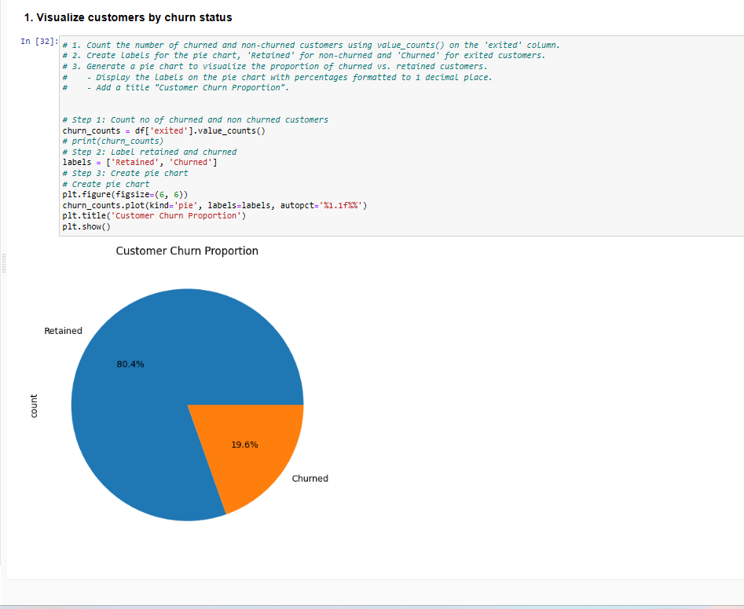

📊 Health Data Analysis Dashboard
This project focuses on analyzing patient health data to uncover patterns related to BMI, diabetes, lifestyle habits, and demographics.
📁 Dataset Overview
- 1000+ patient records
- Demographics: Age, Gender, Location
- Socio-economic: Income, Education, Occupation
- Lifestyle: Smoking, Drinking
- Health Metrics: BMI, Diabetes
📊 BMI & Diabetes Analysis

Key Insights
- BMI is a strong indicator of diabetes risk
- Minimal variation across regions
- Consistent impact across all regions
🏦 Bank Customer Attrition Analysis
Analyzed customer churn data to identify patterns and improve retention strategies.
📁 Dataset Overview
- 9000+ records
- Credit Score, Balance, Tenure
- Churn analysis
📊 Key Analysis

Key Insights
- Low credit score → high churn
- High balance customers leave more
- Mid-age group highest churn
🚖 Uber Ride Analytics
Analyzed ride data to identify demand patterns and optimize operations.
📁 Dataset Overview
- 6974+ rides
- Time & demand patterns
📊 Key Analysis
.png)
Key Insights
- Evening peak hours
- Weekend demand high
- Hotspot zones identified